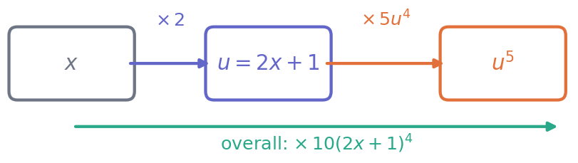
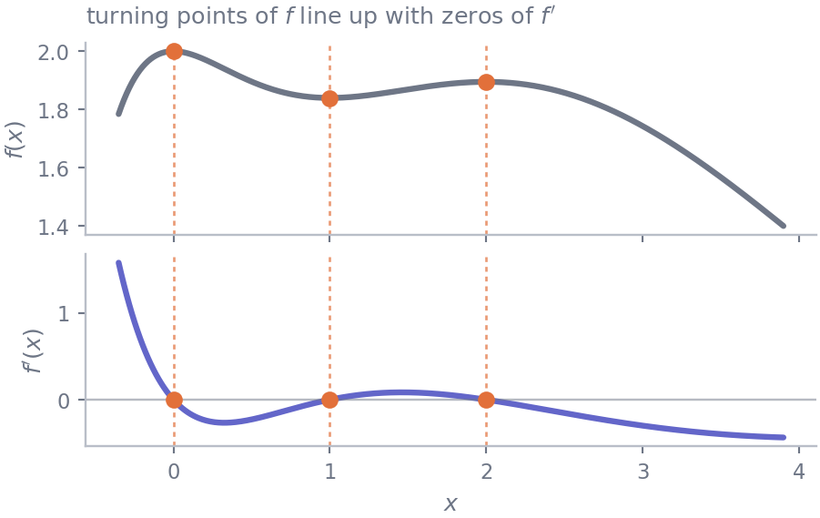

19 The differentiation toolkit
Mathematics · Unit 4
Why this unit is here
M3 defined the derivative and made you compute a few from first principles. That was necessary once and is unbearable as a habit.
This unit replaces it with six rules. After them you will be able to differentiate essentially any function you meet in this course in a line or two — including the ones that appear inside loss functions, which is where all of this is heading.
19.1 Before you start
You should be able to:
- state what \(f'(a)\) means, in words and in units — M3;
- compute a derivative from the difference quotient for a quadratic — M3;
- work with powers, roots and logarithms — M2.
Quick check. In M3 we found from first principles that \(f(x) = x^2\) has \(f'(x) = 2x\). Without doing any work, what do you expect \(f'(x)\) to be for \(f(x) = x^3\)?
TipShow the answer
\(3x^2\). If you spotted the pattern — bring the power down, then reduce it by one — you have already guessed the first and most useful rule below.
If you did not, no matter. That is what this unit is for.
19.2 The idea
Every complicated function is built from simple ones by a small number of moves: adding them, multiplying them, dividing them, and feeding one into another.
The rules below mirror those moves exactly. There is a rule for a sum, a rule for a product, a rule for a quotient, and a rule for a composition. So differentiating a complicated function is a matter of noticing how it was built, and then applying the matching rule.
That is the whole method, and it is worth saying plainly because students often try to memorise the rules as a list of unrelated facts. They are not a list. They are a set of instructions for taking a function apart.
So before differentiating anything, ask one question: what is the outermost thing being done here? Is this fundamentally a product of two things, or a quotient, or one function applied to another? Answer that, and the rule chooses itself.
19.3 The mechanics
19.3.1 The six rules
Let \(f\) and \(g\) be differentiable, and let \(c\) and \(n\) be constants.
| Rule | ||
|---|---|---|
| Constant | \((c)' = 0\) | a flat line has no slope |
| Power | \((x^n)' = n\,x^{n-1}\) | any real \(n\), wherever \(x^n\) is defined and differentiable |
| Sum | \((f + g)' = f' + g'\) | and \((cf)' = c f'\) |
| Product | \((fg)' = f'g + fg'\) | not \(f'g'\) |
| Quotient | \(\left(\dfrac{f}{g}\right)' = \dfrac{f'g - fg'}{g^2}\) | order matters in the numerator |
| Chain | \(\bigl(f(g(x))\bigr)' = f'(g(x)) \cdot g'(x)\) | differentiate the outside, times the inside |
Two more you will need constantly, which we take as given here:
\[ (e^x)' = e^x \qquad\qquad (\ln x)' = \frac{1}{x} \quad (x > 0) \]
The first is the defining property of \(e^x\): it is the function that is its own rate of change. That is the entire reason \(e\) appears everywhere in this subject.
19.3.2 The chain rule deserves a paragraph to itself
It is the one people get wrong, and it is by far the most used — every neural network in existence is trained by applying it repeatedly.
The idea is that a composition is a two-stage process. In \((2x + 1)^5\), the inside stage turns \(x\) into \(2x+1\), and the outside stage raises that to the fifth power. If \(x\) moves a little, the inside moves \(2\) times as much, and the outside moves \(5(\text{inside})^4\) times as much as the inside did. The two sensitivities multiply:
\[ \bigl((2x+1)^5\bigr)' = \underbrace{5(2x+1)^4}_{\text{outside}} \times \underbrace{2}_{\text{inside}} = 10(2x+1)^4 \]
A reliable procedure, if you find it slippery: name the inside. Let \(u = 2x + 1\). Then the function is \(u^5\), and
\[ \frac{d}{dx}u^5 = 5u^4 \cdot \frac{du}{dx} = 5(2x+1)^4 \cdot 2. \]
Forgetting the \(\cdot\,du/dx\) is the single commonest error in first-year calculus.
19.3.3 Second derivatives
Differentiating \(f'\) gives \(f''\), the rate at which the rate is changing. It measures curvature: \(f'' > 0\) means the slope is increasing, so the curve bends upwards. You will use it in M5 to tell a minimum from a maximum.
19.4 Worked example
One function, taken apart.
\[ f(x) = e^{-x}\,(x^3 + 2x + 2) \]
Ask the question first: what is the outermost operation? It is a product — \(e^{-x}\) times a polynomial. So the product rule chooses itself, and we will need the chain rule to handle \(e^{-x}\) along the way.
The two pieces and their derivatives:
\[ \begin{aligned} u &= e^{-x} & u' &= e^{-x} \cdot (-1) = -e^{-x} && \text{(chain rule: inside is } -x)\\ v &= x^3 + 2x + 2 \qquad & v' &= 3x^2 + 2 && \text{(power and sum rules)} \end{aligned} \]
Now assemble with \((uv)' = u'v + uv'\):
\[ \begin{aligned} f'(x) &= -e^{-x}(x^3 + 2x + 2) + e^{-x}(3x^2 + 2) \\[4pt] &= e^{-x}\bigl[-(x^3 + 2x + 2) + 3x^2 + 2\bigr] \\[4pt] &= e^{-x}\bigl(-x^3 + 3x^2 - 2x\bigr) \\[4pt] &= -e^{-x}\bigl(x^3 - 3x^2 + 2x\bigr) \\[4pt] &= -e^{-x}\,x\,(x - 1)(x - 2). \end{aligned} \]

That last factorisation is worth the extra line. It says at a glance that \(f'(x) = 0\) exactly when \(x\) is \(0\), \(1\) or \(2\), because \(e^{-x}\) is never zero. Those three values are precisely what M5 will need. A derivative left as an unfactored mess hides that; a factored one hands it to you.
And the model from M3. We laboured through \(s(h) = 45 + 6h - 0.25h^2\) from first principles over most of a page. With the rules it is one line: the constant goes to \(0\), \(6h\) goes to \(6\), and \(-0.25h^2\) goes to \(-0.5h\), giving \(s'(h) = 6 - 0.5h\). Same answer, about thirty seconds.
19.5 Try it yourself
Exercise 1 Differentiate \(f(x) = \dfrac{x}{3x + 2}\).
TipShow the solution
Outermost operation: a quotient. With \(u = x\) and \(v = 3x+2\), so \(u' = 1\) and \(v' = 3\):
\[ f'(x) = \frac{u'v - uv'}{v^2} = \frac{1 \cdot (3x+2) - x \cdot 3}{(3x+2)^2} = \frac{3x + 2 - 3x}{(3x+2)^2} = \frac{2}{(3x+2)^2}. \]
Worth noticing: the answer is positive everywhere it is defined. Be careful how you say that, though. The function is undefined at \(x = -2/3\), so its domain comes in two separate pieces, and it is increasing on each piece — not across the gap. Comparing \(f(-1) = 1\) with \(f(0) = 0\) shows why: the value drops as \(x\) rises, because the two points sit either side of the break.
Exercise 2 Differentiate \(g(x) = \ln(x^2 + 1)\).
TipShow the solution
Outermost operation: a composition — a logarithm applied to something. Let \(u = x^2 + 1\), so \(g = \ln u\) and \(u' = 2x\):
\[ g'(x) = \frac{1}{u} \cdot u' = \frac{2x}{x^2 + 1}. \]
The commonest wrong answer is \(1/(x^2+1)\), which drops the \(\cdot\,u'\). If you made it, that is the error to watch for from now on — it is the chain rule’s signature failure.
Exercise 3 A model’s squared error for one observation is \(L(a) = (a - 7)^2\), where \(a\) is a parameter you get to choose. Differentiate \(L\) with respect to \(a\), then find where \(L'(a) = 0\) and say in words what that value of \(a\) is doing.
TipShow the solution
Chain rule, with inside \(u = a - 7\) and \(u' = 1\):
\[ L'(a) = 2(a - 7) \cdot 1 = 2(a - 7). \]
Setting \(L'(a) = 0\) gives \(a = 7\).
In words: \(a = 7\) is the choice of parameter that makes the squared error stop changing — and since squaring makes \(L\) non-negative and \(L(7) = 0\), it is the choice that makes the error as small as it can possibly be. You have just fitted a one-parameter model by calculus, which is the whole idea that M5, M6 and M11 develop.
19.6 Check it in Python
Differentiating by hand is error-prone, and a numerical check costs two lines. This is the same centred difference from M3, now used as a routine tool.
import numpy as np
def centred_difference(f, x, step=1e-6):
return (f(x + step) - f(x - step)) / (2 * step)
def f(x): # e^-x (x^3 + 2x + 2)
return np.exp(-x) * (x**3 + 2*x + 2)
def f_prime(x): # our by-hand answer
return -np.exp(-x) * x * (x - 1) * (x - 2)
for x in [0.5, 1.5, 3.0]:
numeric, symbolic = centred_difference(f, x), f_prime(x)
print(f"x={x:<4} numeric {numeric:+.8f} by hand {symbolic:+.8f} "
f"agree: {np.isclose(numeric, symbolic)}")x=0.5 numeric -0.22744900 by hand -0.22744900 agree: True
x=1.5 numeric +0.08367381 by hand +0.08367381 agree: True
x=3.0 numeric -0.29872241 by hand -0.29872241 agree: TrueNow use it on the three exercises at once — the same two lines, three times:
checks = [
("x/(3x+2)", lambda x: x/(3*x + 2), lambda x: 2/(3*x + 2)**2, 1.0),
("ln(x^2+1)", lambda x: np.log(x**2 + 1), lambda x: 2*x/(x**2 + 1), 3.0),
("(a-7)^2", lambda a: (a - 7)**2, lambda a: 2*(a - 7), 4.0),
]
for name, fn, derivative, at in checks:
numeric, symbolic = centred_difference(fn, at), derivative(at)
print(f"{name:<12} at x={at}: {numeric:+.6f} vs {symbolic:+.6f} "
f"agree: {np.isclose(numeric, symbolic)}")x/(3x+2) at x=1.0: +0.080000 vs +0.080000 agree: True
ln(x^2+1) at x=3.0: +0.600000 vs +0.600000 agree: True
(a-7)^2 at x=4.0: -6.000000 vs -6.000000 agree: TrueTry deliberately breaking one. Change the ln(x^2+1) derivative to lambda x: 1/(x**2 + 1) — the chain-rule mistake from Exercise 2 — and watch the check fail. That is what it is for: it will not tell you the right answer, but it will tell you, in one second, that you do not yet have it.
19.7 Common wrong turns
Where this usually goes wrong
- Forgetting the inside derivative
- \((\ln(x^2+1))'\) is \(\frac{2x}{x^2+1}\), not \(\frac{1}{x^2+1}\). Every chain-rule application ends in \(\times\,u'\). If your answer does not contain a factor that came from the inside, you have dropped it.
- Assuming \((fg)' = f'g'\)
- It is \(f'g + fg'\). Test it on \(f = g = x\): the product is \(x^2\) with derivative \(2x\), while \(f'g' = 1\). Not the same.
- Getting the quotient rule backwards
- The numerator is \(f'g - fg'\), in that order. Swapping the terms flips the sign of every answer. If you struggle to keep it straight, rewrite \(f/g\) as \(f \cdot g^{-1}\) and use the product and chain rules instead.
- Applying the power rule to \(e^x\)
- \((e^x)' = e^x\), not \(x e^{x-1}\). The power rule is for a variable base and constant power; \(e^x\) is the other way round.
- Reaching for a rule before looking at the structure
- Ask what the outermost operation is first. Choosing the rule is most of the work; applying it is bookkeeping.
- Leaving the answer unfactored
- \(e^{-x}(-x^3 + 3x^2 - 2x)\) and \(-e^{-x}x(x-1)(x-2)\) are the same function. Only the second one tells you where the derivative is zero, which is usually the reason you differentiated.
19.8 Check yourself
Answers are at the foot of the page.
What is the derivative of \(f(x) = \sqrt{x}\)?
- \(\dfrac{1}{2\sqrt{x}}\) b. \(2\sqrt{x}\) c. \(\dfrac{1}{2}x^{1/2}\) d. \(\sqrt{x}\)
- Differentiate \(y = (3x - 4)^7\).
- A student writes \(\bigl(x^2 e^x\bigr)' = 2x\,e^x\). What did they do wrong, and what is the correct answer?
- Explain, in terms of sensitivity, why the chain rule multiplies rather than adds.
- Your numerical check disagrees with your algebra at \(x = 2\) but agrees at \(x = 1\) and \(x = 5\). Is that more likely to be an algebra error or a numerical one?
TipShow the answers
(a), for \(x > 0\). Write \(\sqrt{x} = x^{1/2}\) and apply the power rule with \(n = \tfrac12\): \(\tfrac12 x^{-1/2} = \frac{1}{2\sqrt{x}}\). The restriction matters — the expression is undefined at \(x = 0\), where \(\sqrt{x}\) is defined but has no finite slope. Option (c) is the common slip of forgetting to reduce the power.
\(y' = 7(3x-4)^6 \cdot 3 = 21(3x-4)^6\). The \(\cdot 3\) is the inside derivative.
They applied the power rule to \(x^2\) and left \(e^x\) alone, as though it were a constant. It is not — it is a product of two functions of \(x\), so: \((x^2 e^x)' = 2x\,e^x + x^2 e^x = x e^x(2 + x)\).
Because the two stages compound. If the inside responds twice as fast as the input, and the outside responds five times as fast as the inside, then the whole thing responds ten times as fast as the input — not seven.
There is not enough evidence to say, and that is the honest answer. Algebra is the first thing to suspect: a factorisation that divided by something, or a cancelled term that happens to vanish at \(x = 2\). But a numerical check can also fail at a single point — if the function is not differentiable there, if the two evaluations nearly cancel, or if \(x = 2\) sits close to a domain boundary. Test several step sizes at \(x = 2\) before deciding: if the disagreement shrinks as the step changes it is numerical, and if it holds steady it is algebra.